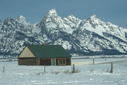

The Outdoor Photographer magazine has listed the Grand Teton National Park as a place to take landscape photographs.
We have found it also has wildlife and flowers to photograph.
One can look on Google Earth "Grand Teton Park" and spend hours looking at images posted taken in the park.
Grand Teton National Park is located just south of Yellowstone or 2 hours from Idaho Falls. There are numerous photographic views of the Tetons.
The Grand Teton Photographer's Guide", By Leo L. Larson and Helen Henkel Larson, Earthwalk Press Book, Printed by Lorraine Press, ISBN# 0-915749-01-7, 1988, has information on photographing in Grand Teton National Park.
Grand Teton National Park Photographer's Map and Guide by Leo L. Larson, Earthwalk Press, ISBN#978-0-915749-25-6, © 2008. Map of park with locations
"The Jackson Hole Photographers Pocket Guide" was obtained from a Jackson Photography Store and availability is unknown. This guide is helpful in photographing GTNP and the Jackson Hole area.
Grand Teton National Park Photographs
|
 |
 |
 |
Tetons from Moose |
Moulton Barn |
Moulton Cabin in Winter |
Moulton Cabin in Summer |
©
Michael Fryer 2010 |
© Roger Heng |
© Sue Heng |
© Sue Heng |
 |
 |
 |
 |
Snake River Outlook |
Moulton Homestead in Fall |
Fall at Oxbow Bend |
Schwabachers Landing |
© Sue Heng |
© Sue Heng |
© Roger Heng |
© David Gale |